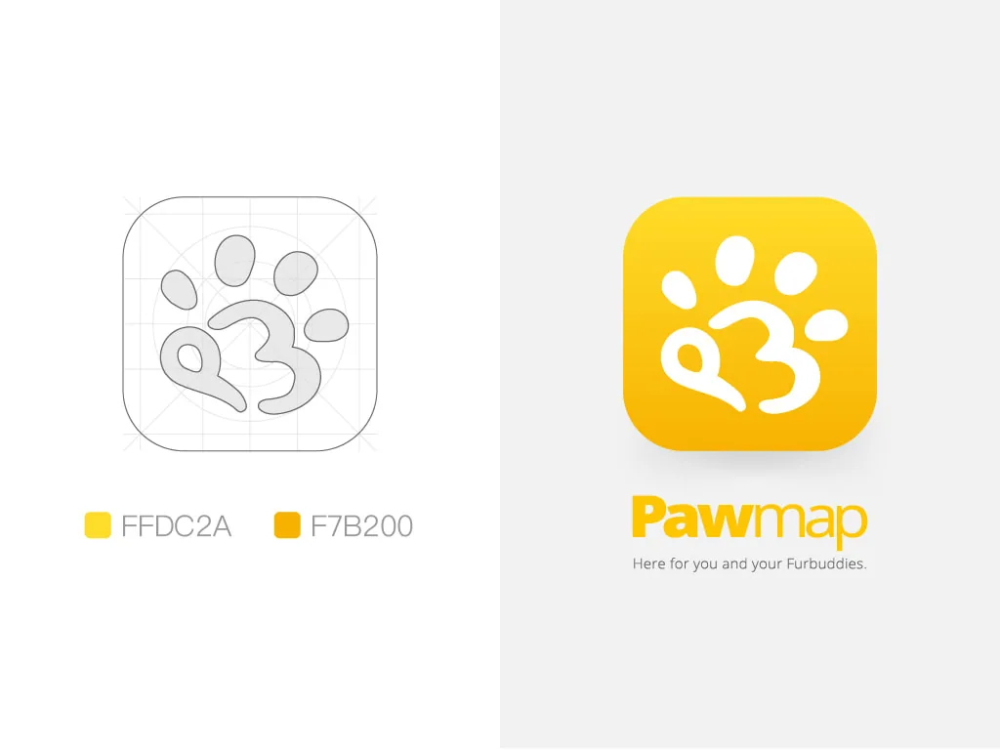
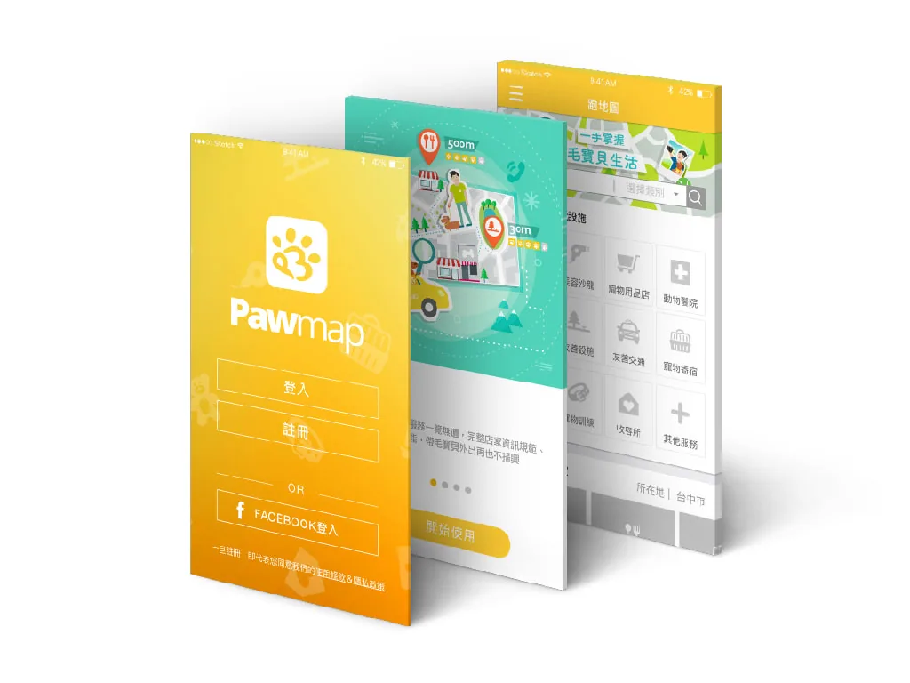
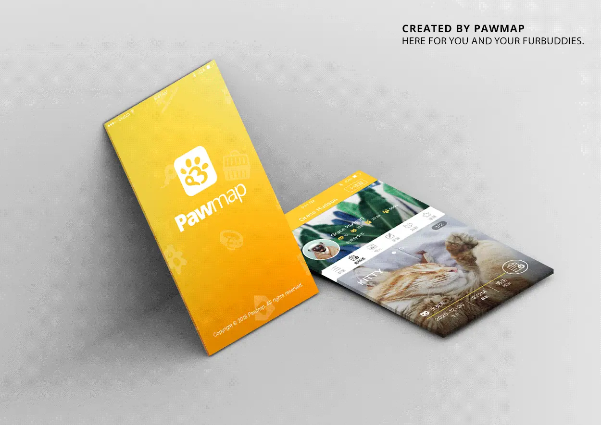
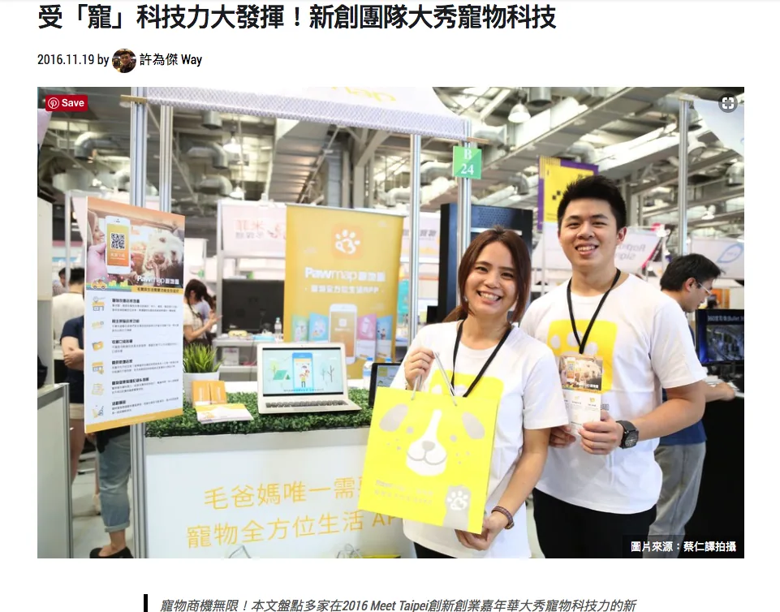

Pawmap跑地圖APP
DESIGN FOR PEP&ME
運用Paw字義-『動物腳掌』作為核心視覺發想。
並輔以PawMap字首"P"、"M"形塑成圓潤的雲朵造型，傳達
此APP雲端資訊整合服務之概念，及品牌的全方位發展。
使用黃色為標準色，將APP之親民、活潑及富專業科技服務形象傳遞出來。








角色設計人形立牌

數位時代相關報導 文・許為傑 ｜ 圖・蔡仁譯｜2016年


插畫、品牌識別與包裝設計
Based in Taichung, Taiwan
DESIGN FOR PEP&ME
運用Paw字義-『動物腳掌』作為核心視覺發想。
並輔以PawMap字首"P"、"M"形塑成圓潤的雲朵造型，傳達
此APP雲端資訊整合服務之概念，及品牌的全方位發展。
使用黃色為標準色，將APP之親民、活潑及富專業科技服務形象傳遞出來。



